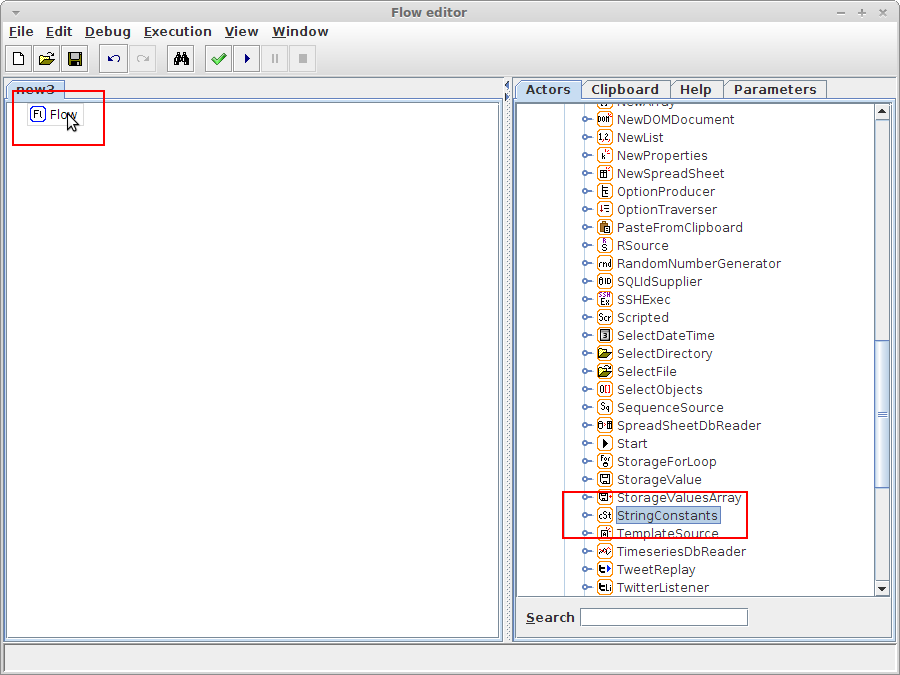
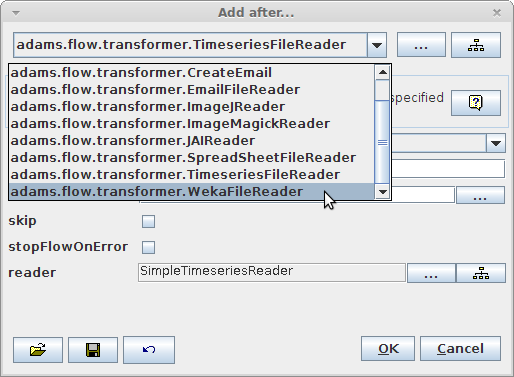
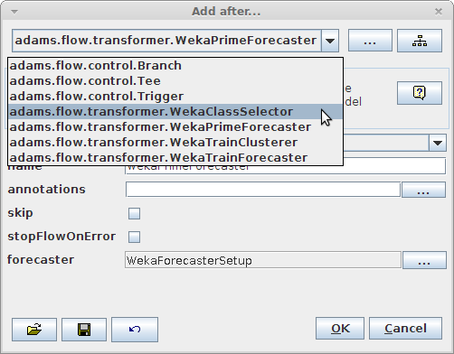
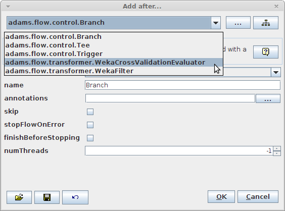
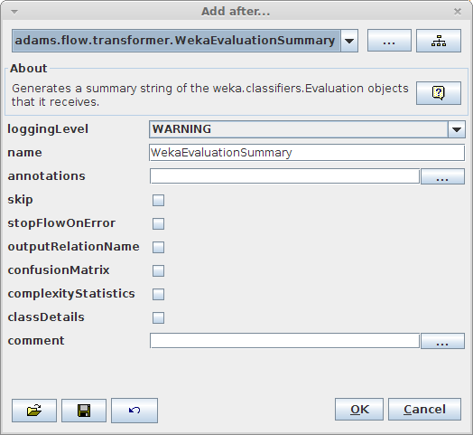
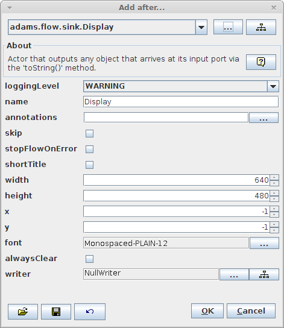

Get started (User)
Check out the manual adams-core-manual.pdf that comes with ADAMS:
Using ADAMS ▶ Flows ▶ Creating flows
This section discusses how to create your first Hello World! flows.
The first part of the manual, Using ADAMS, covers most of the core functionality of ADAMS, like control actors, variables, storage, debugging, etc.
ADAMS strives to enable you to quickly set up and modify complex workflows, allowing you to concentrate on the functionality rather than the presentation.
Using drag'n'drop you can quickly assemble a flow:

Dragging the StringConstants source onto the flow.

Specifying how to insert the StringConstants source into the flow.
Instead of adding actors by dragging them from the library of available ones, you can use ADAMS' context-awareness when adding actors via right-clicking on an actor and adding it beneath, here or after:

You can always bring up the complete range of possible actors by clicking on the class tree button. The popup allows you to perform a search within the (class) names of the actors. While typing the search string the view gets updated and only the actors that match the search string are being displayed.

For now we settle on using the FileSupplier actor as source. Adding an additional actor after the FileSupplier will remove the source actors from the class tree and also change the suggested actors to add next:

After adding the WekaFileReader we get presented with another list of suggested actors:

With the dataset fully configured, the WekaCrossValidationEvaluator actor is the next one that we want to choose from the suggestions:

To obtain a summary of the cross-validation performed, we will add the WekaEvaluationSummary transformer which will generate textual output:

And finally, we add the Display sink for viewing the result of the cross-validation:

Before the flow can be executed, we still need to provide the cross-validation evaluator with a classifier setup. This is done by configuring a callable source actor below the special CallableActors standalone:

The WekaClassifierSetup source simply outputs a classifier setup:

Though the flow editor is mainly used for designing and executing flows, you are by no means restricted to it. ADAMS was designed from the get go to be executed in a server environment, i.e., through command-line invocation. The following command-lines are using the bash shell. Windows users need to change run to run.bat and forward slashes to backslashes.
The class responsible to executing flows from the command-line is:
adams.flow.FlowRunner
You can use the launcher (used in the run and run.bat scripts) to execute a flow as follows:
./bin/run -main adams.flow.FlowRunner -file /path/to/your.flow
If the default memory allocation is now enough or too much, use the -memory option to define the heap size explicitly, e.g., 256 MB:
./bin/run -main adams.flow.FlowRunner -memory 256m -file /path/to/your.flow
The following options are specific to the FlowRunner class:
-clean-up- automatically closes any windows after the flow finishes execution and returns control back to command shell-headless- suppresses all graphical output, useful in server environment/background process
This command-line executes a flow that performs a 10-fold cross-validation and instead of showing the result in a Display actor, it simply outputs it in the console:
./bin/run -main adams.flow.FlowRunner -memory 256m -clean-up -headless -file ./flows/adams-weka-crossvalidate_classifier.flow
The Examples section contains lots of illustrated examples, some with video.
The most important source of examples are all the example flows that ship with ADAMS. The file name consists of the module it originates from, e.g., adams-weka for a WEKA related flow, followed by a short description of the flow itself.